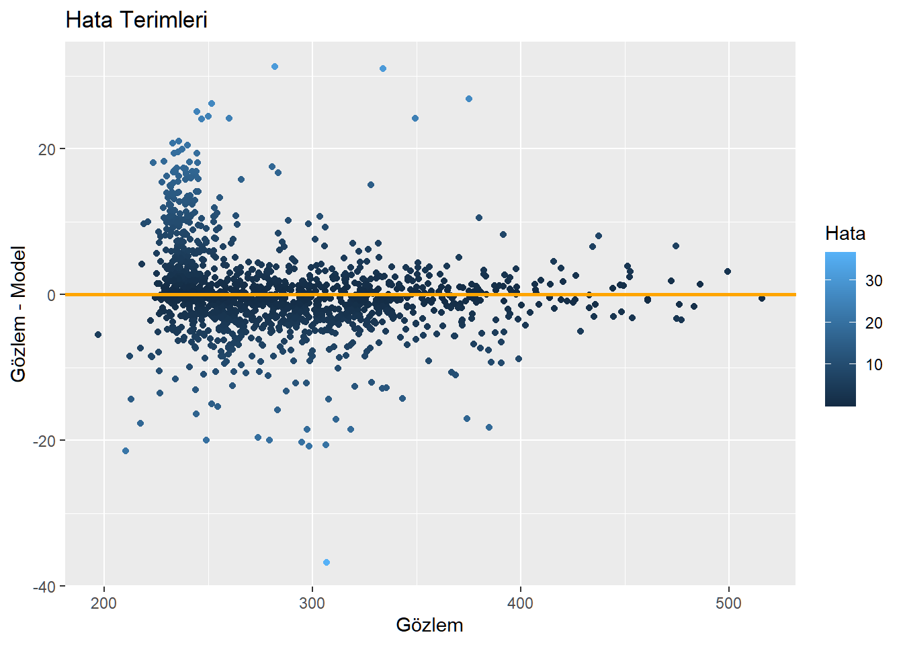
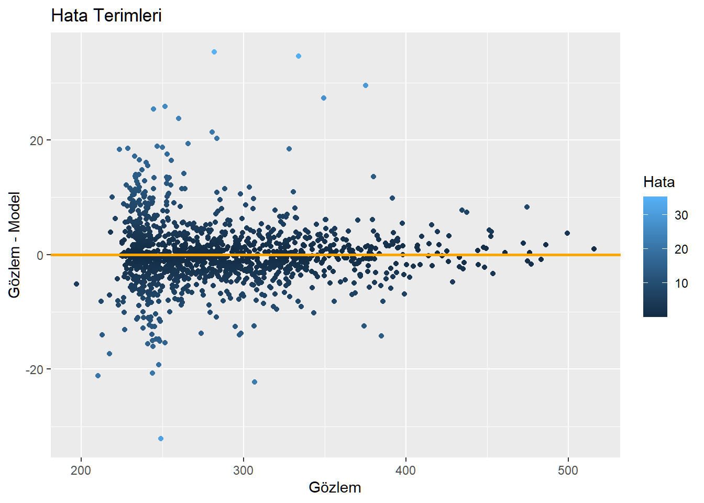
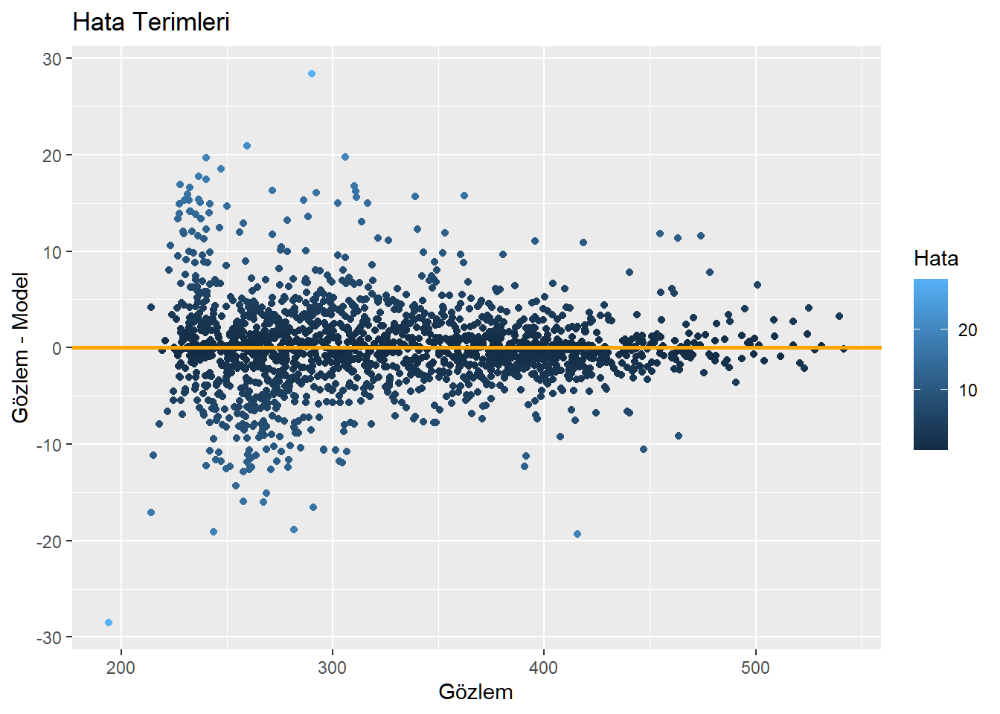
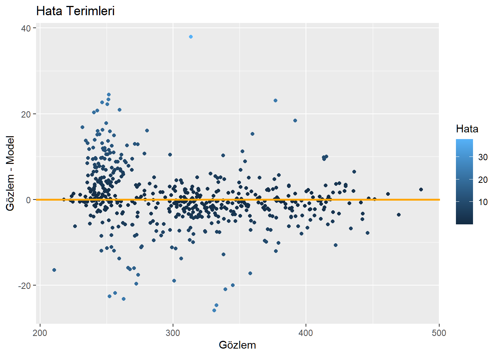

Kod
library(tidyverse)
library(readxl)
library(writexl)Raif Serkan Albayrak
8 Ağustos 2022
Bir önceki yazıda özellikle ATLAS verisi kullanılmadan önce bir veya birden fazla kontenjanla (mesela Burslu ve %50 İndirimli) öğrencinin yerleştiği bir bölümün ortalama puanının nasıl hesaplanabileceğine yönelik geliştirilen model tantılmıştı. Parametrelere bakıldığında modelin hesapladığı ortalama değer, taban ve tavan puan arası beş eşit dilime bölündüğünde taban puandan bir dilim uzaklıktaydı. Spesifik olarak;
\[ OrtalamaPuan=0.791378\times minPuan + 0.221861\times maxPuan \]
Ayrıca modelin Hukuk Fakülteleri için veriyi açıklama gücü %99 seviyesinde olduğu görülmüştü. Bu sayede YKS sonuçları açıklandıktan hemen sonrasında bölüm bazında üniversite sıralamaları yapmak mümkün olabiliyor. Geçmiş yılların sıralama verileriyle elde edilen sonuçlar konsolide edildiğinde bir yıl boyunca verilen kararların ve yapılan yatırımların ne ölçüde yeni adaylara iletilebildiği ve nasıl bir karşılım bulduğu görülebiliyor. Bu yazı her puan türünde hesaplamaları farklı bölümlerde göstermektedir. EA puan türü ile başlanan ilk bölümü takiben SAY ve SÖZ puan türleri için analizleri içeren gönderiler paylaşılmıştır.
EA puan türünde olan tüm bölümler için net ortalamaları ATLAS’tan çekilmiş ve derlenmiştir. Bir önceki yazıda Hukuk Fakülteleri sıralaması oluşturulurken kullanılan veri paylaşılmıştır.
İlk aşamada her kontenjan için ortalama net verisinden faydalanılarak ortalama puan hesaplanıyor. Bölümlerin kaç üniversitede ve toplam kaç farklı kontenjan tipinde öğrenci aldığını gösteren tablo incelendiğinde, sadece tek bir üniversitede açık bölümlerin olduğu görülmekte. Bu bölümler sıralama analizinin devamıda filtreleniyor.
easyNames <- c("Code","obp","tytTur","tytSos","tytMat","tytFen",
"aytTur","aytTar1","aytCog1","aytTar2","aytCog2",
"aytFels","aytDin",
"aytMat","aytFiz","aytKim","aytBio",
"aytDil",
"puan","Uni","Burs","Statu","minP","maksP","kont","yer","BOL")
colnames(EA21) <- easyNames
mp <- as.data.frame(mp)
#Aşağıda ortalama puan hesabında rowwise kullanmak gerekli. En sonda da ungroup yaparak
#rowwise gruplama etkisi geri alınıyor.
EA21 <- EA21 |> rowwise() |> mutate(ortP = obp*0.12 + mp[20]+
tytMat*mp[6]+tytTur*mp[4]+
tytFen*mp[7]+tytSos*mp[5]+
aytMat*mp[15]+aytTur*mp[8]+
aytTar1*mp[9]+aytCog1*mp[10]) |> ungroup()
EA21$ortP <- EA21$ortP$CONSTANT
t1 <- EA21 |> group_by(BOL) |> summarise(
Universite = n_distinct(Uni),
Kontenjan =n_distinct(minP)
)
knitr::kable(t1)| BOL | Universite | Kontenjan |
|---|---|---|
| ANTROPOLOJİ | 1 | 2 |
| ARKEOLOJİ | 1 | 2 |
| BANKACILIK VE SİGORTACILIK | 2 | 4 |
| BİLGİ VE BELGE YÖNETİMİ | 1 | 2 |
| BİLİM TARİHİ | 1 | 1 |
| ÇOCUK GELİŞİMİ | 17 | 39 |
| DENİZCİLİK İŞLETMELERİ YÖNETİMİ | 1 | 3 |
| EGZERSİZ VE SPOR BİLİMLERİ | 1 | 2 |
| EKONOMİ | 16 | 36 |
| EKONOMİ VE FİNANS | 7 | 17 |
| ELEKTRONİK TİCARET VE YÖNETİMİ | 2 | 3 |
| ENERJİ YÖNETİMİ | 1 | 1 |
| FELSEFE | 8 | 12 |
| FİNANS VE BANKACILIK | 4 | 8 |
| GAYRİMENKUL GELİŞTİRME VE YÖNETİMİ | 1 | 2 |
| GİRİŞİMCİLİK | 2 | 3 |
| GRAFİK TASARIMI | 5 | 11 |
| GÜMRÜK İŞLETME | 1 | 2 |
| HAVACILIK YÖNETİMİ | 16 | 36 |
| HUKUK | 37 | 96 |
| İÇ MİMARLIK VE ÇEVRE TASARIMI | 35 | 98 |
| İKTİSADİ VE İDARİ BİLİMLER PROGRAMLARI | 1 | 2 |
| İKTİSADİ VE İDARİ PROGRAMLAR | 1 | 2 |
| İKTİSAT | 14 | 39 |
| İNSAN KAYNAKLARI YÖNETİMİ | 2 | 4 |
| İSLAM İKTİSADI VE FİNANS | 2 | 4 |
| İŞLETME | 50 | 129 |
| KAMU YÖNETİMİ | 2 | 3 |
| KÜLTÜR VARLIKLARINI KORUMA VE ONARIM | 1 | 1 |
| LOJİSTİK YÖNETİMİ | 17 | 35 |
| MALİYE | 1 | 2 |
| MUHASEBE VE DENETİM | 1 | 2 |
| MUHASEBE VE FİNANS YÖNETİMİ | 3 | 5 |
| OTEL YÖNETİCİLİĞİ | 1 | 2 |
| PAZARLAMA | 2 | 3 |
| PSİKOLOJİ | 61 | 210 |
| REHBERLİK VE PSİKOLOJİK DANIŞMANLIK | 17 | 39 |
| REKREASYON | 1 | 1 |
| SAĞLIK YÖNETİMİ | 16 | 30 |
| SANAT VE SOSYAL BİLİMLER PROGRAMLARI | 1 | 3 |
| SERMAYE PİYASASI | 1 | 2 |
| SİGORTACILIK | 1 | 1 |
| SİGORTACILIK VE SOSYAL GÜVENLİK | 1 | 2 |
| SINIF ÖĞRETMENLİĞİ | 5 | 12 |
| SİYASET BİLİMİ VE KAMU YÖNETİMİ | 20 | 42 |
| SİYASET BİLİMİ VE ULUSLARARASI İLİŞKİLER | 28 | 64 |
| SOSYAL HİZMET | 15 | 30 |
| SOSYOLOJİ | 23 | 50 |
| SPOR YÖNETİCİLİĞİ | 2 | 3 |
| TAKI TASARIMI | 1 | 1 |
| TARIM EKONOMİSİ | 1 | 1 |
| TARIM TİCARETİ VE İŞLETMECİLİĞİ | 1 | 2 |
| TEKNOLOJİ VE BİLGİ YÖNETİMİ | 1 | 2 |
| TEKSTİL VE MODA TASARIMI | 2 | 4 |
| TURİZM İŞLETMECİLİĞİ | 7 | 12 |
| TURİZM VE OTEL İŞLETMECİLİĞİ | 1 | 2 |
| ULUSLARARASI FİNANS | 4 | 9 |
| ULUSLARARASI FİNANS VE BANKACILIK | 4 | 6 |
| ULUSLARARASI GİRİŞİMCİLİK | 1 | 3 |
| ULUSLARARASI İLİŞKİLER | 20 | 38 |
| ULUSLARARASI İŞLETME YÖNETİMİ | 2 | 5 |
| ULUSLARARASI TİCARET | 2 | 5 |
| ULUSLARARASI TİCARET VE FİNANSMAN | 20 | 50 |
| ULUSLARARASI TİCARET VE İŞLETMECİLİK | 12 | 27 |
| ULUSLARARASI TİCARET VE LOJİSTİK | 9 | 21 |
| ULUSLARARASI ULAŞTIRMA SİSTEMLERİ | 1 | 2 |
| YÖNETİM BİLİMLERİ PROGRAMLARI | 1 | 3 |
| YÖNETİM BİLİŞİM SİSTEMLERİ | 32 | 83 |
Model oluşturmaya tüm EA bölümleri tek bir havuzda toplanarak başlanıyor. Bu modelin açıklayıcılığı çok yüksek olsa da hata terimlerindeki problem nedeniyle modele ufak bir modifikasyon yapma ihtiyacı duyuluyor. Devamında bölüm bazında modeller de kuruluyor.
Call:
lm(formula = ortP ~ -1 + minP + maksP, data = EA21)
Residuals:
Min 1Q Median 3Q Max
-36.726 -2.723 -0.311 2.364 31.294
Coefficients:
Estimate Std. Error t value Pr(>|t|)
minP 0.724983 0.006646 109.09 <2e-16 ***
maksP 0.278555 0.005945 46.86 <2e-16 ***
---
Signif. codes: 0 '***' 0.001 '**' 0.01 '*' 0.05 '.' 0.1 ' ' 1
Residual standard error: 6.29 on 1323 degrees of freedom
Multiple R-squared: 0.9995, Adjusted R-squared: 0.9995
F-statistic: 1.421e+06 on 2 and 1323 DF, p-value: < 2.2e-16Hataların dağılımına bağıldığında ilk 250 puan bandında problem olduğu görülüyor. Bunun nedeni muhtemelen barajın hemen üstünde hesaplanan puanlar. Bu bölgede barajın etkisi nedeniyle puanlar sıkışıyor. Model de düşük tahminleme yapıyor.
results <- data.frame(real = EA21$ortP,model=predict(grandModel))
results$fark <- results$real-results$model
results$absfark <- abs(results$real-results$model)
ggplot(results, aes(x=real, y=fark, colour=absfark))+geom_point() +
labs(title = "Hata Terimleri",
x = "Gözlem",
y = "Gözlem - Model",
colour= "Hata") +
geom_abline(slope = 0, intercept = 0, colour="orange", size=1)
Veride ortalaması 250’den düşük 418 kotenjan var. Bu sayı tüm kontenjanların yaklaşık üçte biri. Modele tek bir dummy değişken ekleyerek de hata terimlerinin iyileştirilmesi sağlanabilir ancak açıklayıcılığı hala min ve maks puanlara yüklemek istediğimizden iki dummy değişken oluşturup bunları min ve maks puanlarla çarpıyoruz. Sonuçta min puanın etkisinin bu kontenjanlar için 0.72’den 0.60’a düştüğü görülüyor. Buna bağlı olarak maks puanın etkisi de 0.28’den, 0.40’a yükseliyor. Hata terimlerinin varyansı hala sıkıntılı1 ancak en azından sıfır etrafında simetri yakalandı ve model şu an için iş görür durumda.
Call:
lm(formula = ortP ~ -1 + minP + maksP + Dmin + Dmaks, data = EA21)
Residuals:
Min 1Q Median 3Q Max
-32.107 -2.518 -0.238 2.331 35.409
Coefficients:
Estimate Std. Error t value Pr(>|t|)
minP 0.778507 0.006874 113.26 <2e-16 ***
maksP 0.226800 0.006201 36.57 <2e-16 ***
Dmin -0.162141 0.014324 -11.32 <2e-16 ***
Dmaks 0.158870 0.012521 12.69 <2e-16 ***
---
Signif. codes: 0 '***' 0.001 '**' 0.01 '*' 0.05 '.' 0.1 ' ' 1
Residual standard error: 5.611 on 1321 degrees of freedom
Multiple R-squared: 0.9996, Adjusted R-squared: 0.9996
F-statistic: 8.931e+05 on 4 and 1321 DF, p-value: < 2.2e-16results <- data.frame(real = EA21$ortP,model=predict(grandModel1))
results$fark <- results$real-results$model
results$absfark <- abs(results$real-results$model)
ggplot(results, aes(x=real, y=fark, colour=absfark))+geom_point() +
labs(title = "Hata Terimleri",
x = "Gözlem",
y = "Gözlem - Model",
colour= "Hata") +
geom_abline(slope = 0, intercept = 0, colour="orange", size=1)
SAY puan türünde vakıf üniversitelerinin 1728 kontenjanı var. Önce bu veri filtrelenerek yükleniyor. Devamında EA için uygulanan adımlar izlendi.
SAY puan türünde de tek bir üniversitede bulunan kontenjanlar veriden ayıklandı. ATLAS verisinde bulunan kontenjan bazlı ortalama net bilgisi daha önceki yazılarda paylaşılmış olan puan hesaplam modeliyle beraber kullanılarak her kontenjanın ortalama puanı hesaplandı.
easyNames <- c("Code","obp","tytTur","tytSos","tytMat","tytFen",
"aytTur","aytTar1","aytCog1","aytTar2","aytCog2",
"aytFels","aytDin",
"aytMat","aytFiz","aytKim","aytBio",
"aytDil",
"puan","Uni","Burs","Statu","minP","maksP","kont","yer","BOL")
colnames(SAY21) <- easyNames
mp <- as.data.frame(mp)
#Aşağıda ortalama puan hesabında rowwise kullanmak gerekli. En sonda da ungroup yaparak
#rowwise gruplama etkisi geri alınıyor.
SAY21 <- SAY21 |> rowwise() |> mutate(ortP = obp*0.12 + mp[20]+
tytMat*mp[6]+tytTur*mp[4]+
tytFen*mp[7]+tytSos*mp[5]+
aytMat*mp[15]+aytFiz*mp[16]+
aytKim*mp[17]+aytBio*mp[18]) |> ungroup()
SAY21$ortP <- SAY21$ortP$CONSTANT
t1 <- SAY21 |> group_by(BOL) |> summarise(
Universite = n_distinct(Uni),
Kontenjan =n_distinct(minP)
)
knitr::kable(t1)| BOL | Universite | Kontenjan |
|---|---|---|
| ADLİ BİLİMLER | 1 | 2 |
| BESLENME VE DİYETETİK | 42 | 105 |
| BİLGİ GÜVENLİĞİ TEKNOLOJİSİ | 1 | 2 |
| BİLGİSAYAR MÜHENDİSLİĞİ | 52 | 124 |
| BİLGİSAYAR VE ÖĞRETİM TEKNOLOJİLERİ ÖĞRETMENLİĞİ | 1 | 2 |
| BİLİŞİM SİSTEMLERİ MÜHENDİSLİĞİ | 2 | 4 |
| BİLİŞİM SİSTEMLERİ VE TEKNOLOJİLERİ | 3 | 9 |
| BİYOENFORMATİK VE GENETİK | 1 | 2 |
| BİYOMEDİKAL MÜHENDİSLİĞİ | 13 | 25 |
| BİYOMÜHENDİSLİK | 1 | 2 |
| DENİZ ULAŞTIRMA İŞLETME MÜHENDİSLİĞİ | 1 | 3 |
| DİJİTAL OYUN TASARIMI | 9 | 19 |
| DİL VE KONUŞMA TERAPİSİ | 15 | 39 |
| DİŞ HEKİMLİĞİ FAKÜLTESİ | 25 | 86 |
| EBELİK | 15 | 32 |
| ECZACILIK FAKÜLTESİ | 12 | 47 |
| ELEKTRİK-ELEKTRONİK MÜHENDİSLİĞİ | 44 | 96 |
| ENDÜSTRİ MÜHENDİSLİĞİ | 47 | 106 |
| ENDÜSTRİYEL TASARIM | 19 | 42 |
| ENDÜSTRİYEL TASARIM MÜHENDİSLİĞİ | 1 | 1 |
| ENERJİ SİSTEMLERİ MÜHENDİSLİĞİ | 4 | 9 |
| ERGOTERAPİ | 10 | 19 |
| FİZİK | 4 | 10 |
| FİZYOTERAPİ VE REHABİLİTASYON | 43 | 92 |
| FLORENCE NİGHTİNGALE HASTANESİ HEMŞİRELİK YÜKSEKOKULU | 2 | 4 |
| GEMİ İNŞAATI VE GEMİ MAKİNELERİ MÜHENDİSLİĞİ | 1 | 3 |
| GEMİ MAKİNELERİ İŞLETME MÜHENDİSLİĞİ | 1 | 3 |
| GEMİ VE YAT TASARIMI | 1 | 2 |
| GENETİK VE BİYOMÜHENDİSLİK | 4 | 8 |
| GENETİK VE YAŞAM BİLİMLERİ PROGRAMLARI | 1 | 2 |
| GIDA MÜHENDİSLİĞİ | 3 | 6 |
| HAVACILIK ELEKTRİK VE ELEKTRONİĞİ | 3 | 6 |
| HAVACILIK VE UZAY MÜHENDİSLİĞİ | 2 | 4 |
| HEMŞİRELİK | 42 | 114 |
| HEMŞİRELİK YÜKSEKOKULU | 3 | 8 |
| İÇ MİMARLIK | 19 | 43 |
| İLKÖĞRETİM MATEMATİK ÖĞRETMENLİĞİ | 9 | 20 |
| İNŞAAT MÜHENDİSLİĞİ | 33 | 65 |
| İŞ SAĞLIĞI VE GÜVENLİĞİ | 2 | 3 |
| İŞLETME MÜHENDİSLİĞİ | 1 | 3 |
| İSTATİSTİK | 1 | 2 |
| KENTSEL TASARIM VE PEYZAJ MİMARLIĞI | 3 | 6 |
| KİMYA | 3 | 6 |
| KİMYA-BİYOLOJİ MÜHENDİSLİĞİ | 1 | 3 |
| KİMYA MÜHENDİSLİĞİ | 5 | 9 |
| MAKİNE MÜHENDİSLİĞİ | 30 | 68 |
| MALZEME BİLİMİ VE MÜHENDİSLİĞİ | 1 | 2 |
| MALZEME BİLİMİ VE NANOTEKNOLOJİ MÜHENDİSLİĞİ | 2 | 5 |
| MATEMATİK | 13 | 26 |
| MATEMATİK VE BİLGİSAYAR BİLİMLERİ | 1 | 3 |
| MEKATRONİK MÜHENDİSLİĞİ | 14 | 29 |
| METALURJİ VE MALZEME MÜHENDİSLİĞİ | 2 | 3 |
| MİMARLIK | 45 | 108 |
| MOLEKÜLER BİYOLOJİ VE GENETİK | 18 | 47 |
| MÜHENDİSLİK PROGRAMLARI | 2 | 6 |
| MÜHENDİSLİK VE DOĞA BİLİMLERİ PROGRAMLARI | 1 | 3 |
| ODYOLOJİ | 16 | 29 |
| ORTEZ VE PROTEZ | 2 | 3 |
| OTOMOTİV MÜHENDİSLİĞİ | 2 | 4 |
| PERFÜZYON | 2 | 4 |
| PİLOTAJ | 9 | 17 |
| ŞEHİR VE BÖLGE PLANLAMA | 2 | 4 |
| TARIM MAKİNELERİ VE TEKNOLOJİLERİ MÜHENDİSLİĞİ | 1 | 1 |
| TIP | 32 | 110 |
| TIP MÜHENDİSLİĞİ | 1 | 2 |
| UÇAK BAKIM VE ONARIM | 2 | 5 |
| UÇAK ELEKTRİK VE ELEKTRONİĞİ | 1 | 2 |
| UÇAK GÖVDE VE MOTOR BAKIMI | 2 | 4 |
| UÇAK MÜHENDİSLİĞİ | 2 | 8 |
| UZAY MÜHENDİSLİĞİ | 1 | 3 |
| YAPAY ZEKA MÜHENDİSLİĞİ | 2 | 6 |
| YAZILIM GELİŞTİRME | 2 | 4 |
| YAZILIM MÜHENDİSLİĞİ | 30 | 72 |
SAY puan türü için modelin açıklayıcılığı %99.98 oldu. EA’da gözlemlenen yoğun heteroskedastisite burada daha az ve ihmal edilebilir seviyelerde. Sonuçta EA için bulunan %73-%27 çarpanları burada da bulunuyor.
Call:
lm(formula = ortP ~ -1 + minP + maksP, data = SAY21)
Residuals:
Min 1Q Median 3Q Max
-28.4654 -2.1042 -0.1025 2.2675 28.4218
Coefficients:
Estimate Std. Error t value Pr(>|t|)
minP 0.733920 0.003948 185.91 <2e-16 ***
maksP 0.267680 0.003596 74.45 <2e-16 ***
---
Signif. codes: 0 '***' 0.001 '**' 0.01 '*' 0.05 '.' 0.1 ' ' 1
Residual standard error: 4.834 on 1726 degrees of freedom
Multiple R-squared: 0.9998, Adjusted R-squared: 0.9998
F-statistic: 4.124e+06 on 2 and 1726 DF, p-value: < 2.2e-16results <- data.frame(real = SAY21$ortP,model=predict(grandModelSAY))
results$fark <- results$real-results$model
results$absfark <- abs(results$real-results$model)
ggplot(results, aes(x=real, y=fark, colour=absfark))+geom_point() +
labs(title = "Hata Terimleri",
x = "Gözlem",
y = "Gözlem - Model",
colour= "Hata") +
geom_abline(slope = 0, intercept = 0, colour="orange", size=1)
SÖZ puan türünde vakıf üniversielerinde toplam 546 kontenjan var. Yukarıda EA ve SAY puan türleri için atılan adımlar aynı sırada ve aynı yöntemle izleniyor.
easyNames <- c("Code","obp","tytTur","tytSos","tytMat","tytFen",
"aytTur","aytTar1","aytCog1","aytTar2","aytCog2",
"aytFels","aytDin",
"aytMat","aytFiz","aytKim","aytBio",
"aytDil",
"puan","Uni","Burs","Statu","minP","maksP","kont","yer","BOL")
colnames(SOZ21) <- easyNames
mp <- as.data.frame(mp)
#Aşağıda ortalama puan hesabında rowwise kullanmak gerekli. En sonda da ungroup yaparak
#rowwise gruplama etkisi geri alınıyor.
SOZ21 <- SOZ21 |> rowwise() |> mutate(ortP = obp*0.12 + mp[20]+
tytMat*mp[6]+tytTur*mp[4]+
tytFen*mp[7]+tytSos*mp[5]+
aytTur*mp[8]+aytTar1*mp[9]+
aytCog1*mp[10]+aytTar2*mp[11]+
aytCog2*mp[12]+aytFels*mp[13]+
aytDin*mp[14]) |> ungroup()
SOZ21$ortP <- SOZ21$ortP$CONSTANT
t1 <- SOZ21 |> group_by(BOL) |> summarise(
Universite = n_distinct(Uni),
Kontenjan =n_distinct(minP)
)
knitr::kable(t1)| BOL | Universite | Kontenjan |
|---|---|---|
| ARKEOLOJİ VE SANAT TARİHİ | 1 | 2 |
| ÇİZGİ FİLM VE ANİMASYON | 8 | 17 |
| FİLM TASARIMI VE YÖNETİMİ | 2 | 5 |
| GASTRONOMİ VE MUTFAK SANATLARI | 34 | 95 |
| GAZETECİLİK | 6 | 12 |
| GÖRSEL İLETİŞİM TASARIMI | 25 | 53 |
| HALKLA İLİŞKİLER VE REKLAMCILIK | 20 | 43 |
| HALKLA İLİŞKİLER VE TANITIM | 10 | 23 |
| İLAHİYAT | 1 | 2 |
| İLETİŞİM BİLİMLERİ | 1 | 2 |
| İLETİŞİM SANATLARI | 1 | 3 |
| İLETİŞİM TASARIMI VE YÖNETİMİ | 1 | 2 |
| İLETİŞİM VE TASARIMI | 13 | 28 |
| İSLAMİ İLİMLER | 2 | 5 |
| İSLAMİ İLİMLER FAKÜLTESİ | 1 | 2 |
| MEDYA VE GÖRSEL SANATLAR | 2 | 5 |
| MEDYA VE İLETİŞİM | 2 | 4 |
| OKUL ÖNCESİ ÖĞRETMENLİĞİ | 13 | 31 |
| ÖZEL EĞİTİM ÖĞRETMENLİĞİ | 8 | 18 |
| RADYO, TELEVİZYON VE SİNEMA | 23 | 52 |
| REKLAM TASARIMI VE İLETİŞİMİ | 1 | 2 |
| REKLAMCILIK | 6 | 13 |
| SANAT VE KÜLTÜR YÖNETİMİ | 3 | 6 |
| SİNEMA VE DİJİTAL MEDYA | 1 | 2 |
| SİNEMA VE TELEVİZYON | 4 | 8 |
| TARİH | 13 | 25 |
| TELEVİZYON HABERCİLİĞİ VE PROGRAMCILIĞI | 4 | 8 |
| TÜRK DİLİ VE EDEBİYATI | 18 | 36 |
| TÜRKÇE ÖĞRETMENLİĞİ | 5 | 11 |
| YENİ MEDYA | 3 | 9 |
| YENİ MEDYA VE İLETİŞİM | 17 | 39 |
Sonuçta modele bakıldığında %99.95 açıklayıcılıkla %68-%32 ilişkisi bulunuyor. Her ne kadar EA ve SAY için hesaplanan değerlerden bir sapma olsa da gene de %70 - %30 etrfında dolaşan değerlerle karşılaşılıyor.
Call:
lm(formula = ortP ~ -1 + minP + maksP, data = SOZ21)
Residuals:
Min 1Q Median 3Q Max
-25.839 -2.722 -0.202 3.294 37.996
Coefficients:
Estimate Std. Error t value Pr(>|t|)
minP 0.684841 0.008011 85.49 <2e-16 ***
maksP 0.318621 0.006922 46.03 <2e-16 ***
---
Signif. codes: 0 '***' 0.001 '**' 0.01 '*' 0.05 '.' 0.1 ' ' 1
Residual standard error: 7.125 on 544 degrees of freedom
Multiple R-squared: 0.9995, Adjusted R-squared: 0.9995
F-statistic: 5.272e+05 on 2 and 544 DF, p-value: < 2.2e-16results <- data.frame(real = SOZ21$ortP,model=predict(grandModelSOZ))
results$fark <- results$real-results$model
results$absfark <- abs(results$real-results$model)
ggplot(results, aes(x=real, y=fark, colour=absfark))+geom_point() +
labs(title = "Hata Terimleri",
x = "Gözlem",
y = "Gözlem - Model",
colour= "Hata") +
geom_abline(slope = 0, intercept = 0, colour="orange", size=1)
Heteroskedastisite problemi var; düşük puanların olduğu bölgede hata terimlerinin varyansı yüksek puanların olduğu bölgedeki varyansa göre daha fazla.↩︎
@online{serkanalbayrak2022,
author = {Raif Serkan Albayrak},
title = {YKS Puanı Hesaplama Formülleri-3: Bölüm Bazlı Üniversite
Sıralamaları (Tüm Bölümler için ve Yıllara Sari)},
date = {2022-08-08},
langid = {tr}
}